Servizi
Un unico interlocutore per casa e ufficio: ti evita di coordinare imprese diverse e di rincorrere tre preventivi.

Case, uffici e aziende a Milano, provincia e Brianza. Imballaggio, smontaggio, trasporto e rimontaggio.
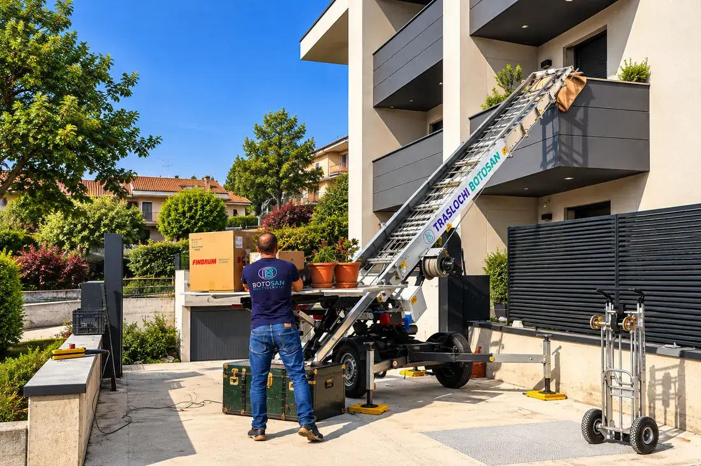
Fino a 45 metri, sempre con operatore. Quando l’ascensore è piccolo o le scale sono strette.

Custodito in ambienti protetti e controllati, per pochi giorni o per diversi mesi.
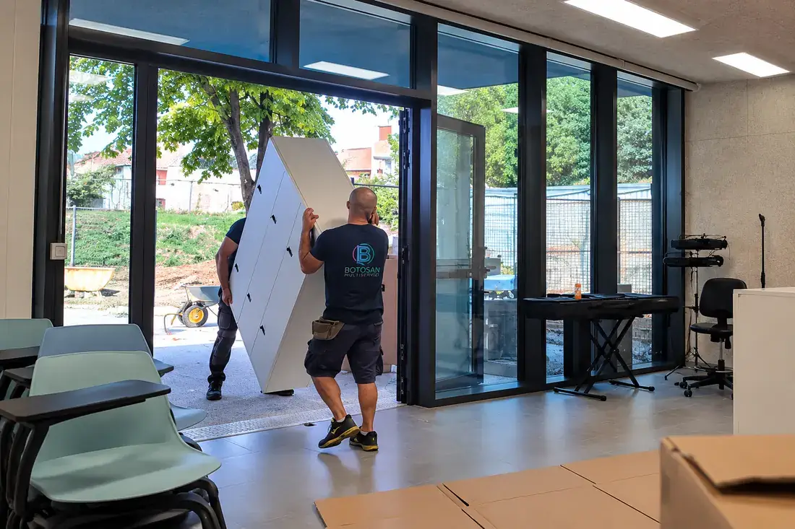
Appartamenti, cantine, box e uffici, con smaltimento in discarica autorizzata già compreso.

Anche per un solo mobile o poche scatole, senza organizzare un trasloco completo.
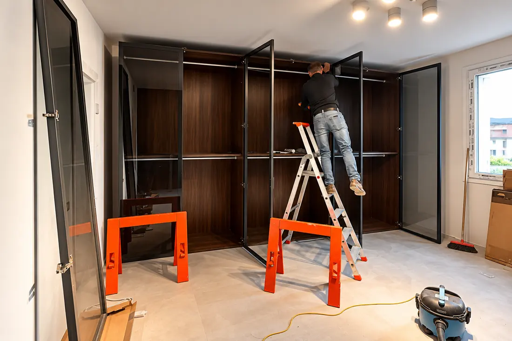
Tinteggiatura, cartongesso, parquet, montaggio porte e pulizie post cantiere.
Elenco completo
Quello che facciamo abitualmente per privati, condomini e aziende. Se quello che ti serve non è in elenco, chiedicelo: probabilmente lo facciamo lo stesso.
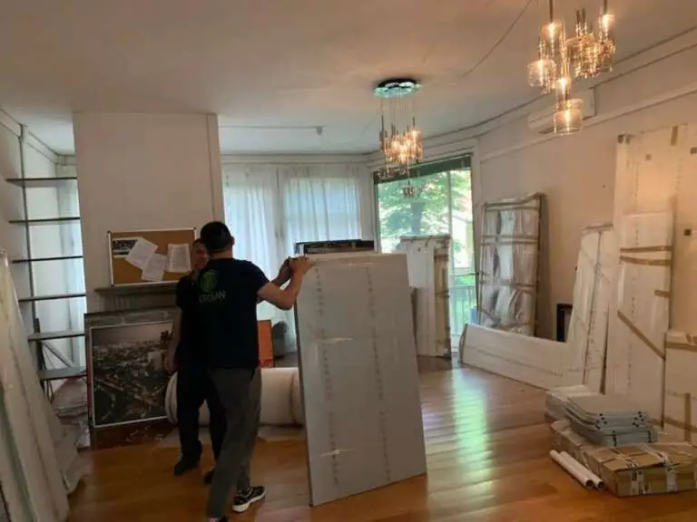
Trasloco di casaAppartamenti, ville e case singole, con imballaggio, smontaggio, trasporto e rimontaggio. Trasloco di ufficio e aziendaUffici, negozi, capannoni e archivi, anche nel fine settimana per non fermare il lavoro.
Trasloco di ufficio e aziendaUffici, negozi, capannoni e archivi, anche nel fine settimana per non fermare il lavoro. Traslochi di pregioResidenze di prestigio, opere d’arte, antiquariato e pezzi delicati, con protezioni dedicate.
Traslochi di pregioResidenze di prestigio, opere d’arte, antiquariato e pezzi delicati, con protezioni dedicate. Traslochi a lunga distanzaTrasferimenti in tutta Italia, con programmazione dei tempi e un solo referente.Imballaggio e fornitura materialiScatole, carta, pluriball, bauli appendiabiti e protezioni portate da noi.
Traslochi a lunga distanzaTrasferimenti in tutta Italia, con programmazione dei tempi e un solo referente.Imballaggio e fornitura materialiScatole, carta, pluriball, bauli appendiabiti e protezioni portate da noi. Smontaggio e rimontaggio mobiliArmadi, cucine, letti e librerie smontati e rimontati dal nostro personale.
Smontaggio e rimontaggio mobiliArmadi, cucine, letti e librerie smontati e rimontati dal nostro personale. Montaggio di mobili nuoviMontiamo gli arredi appena acquistati e li collochiamo dove servono.Vendita materiali da imballoScatole di varie misure, pluriball, carta, nastro e bauli appendiabiti, anche senza trasloco.
Montaggio di mobili nuoviMontiamo gli arredi appena acquistati e li collochiamo dove servono.Vendita materiali da imballoScatole di varie misure, pluriball, carta, nastro e bauli appendiabiti, anche senza trasloco.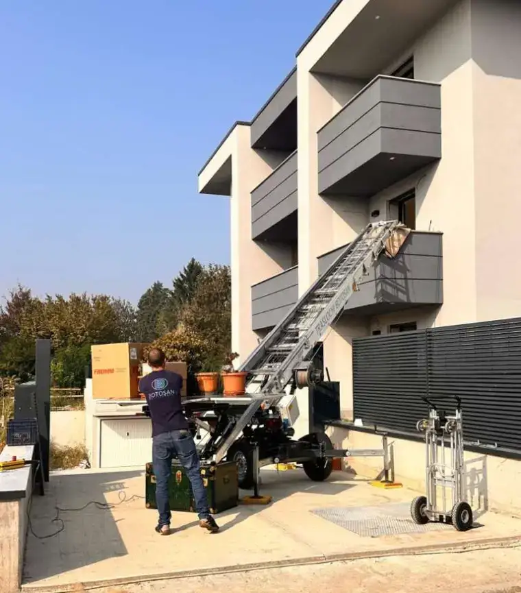
Noleggio scala aerea 24 mCompatta e maneggevole, per i primi piani e gli spazi stretti.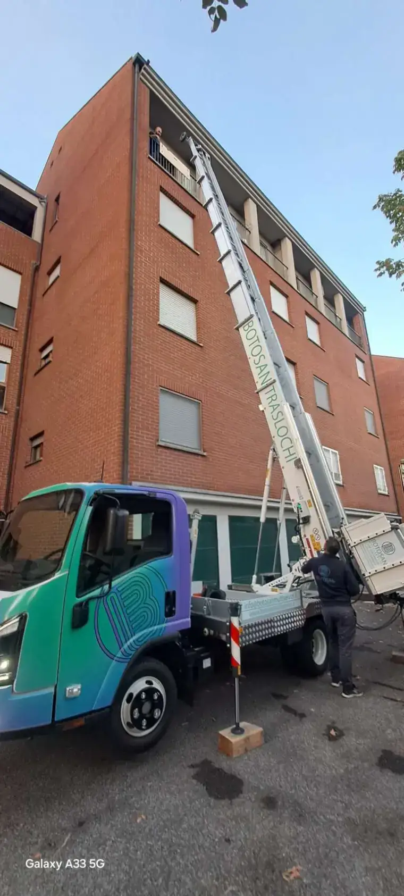
Noleggio scala aerea 33 mPer i piani alti, sempre con operatore a bordo.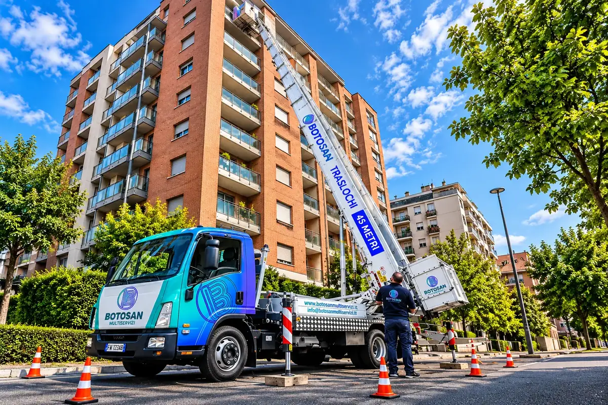
Noleggio scala aerea 45 mPer i palazzi più alti, dove nessun’altra soluzione arriva. Piattaforme ed elevatoriPer esterni, cantieri e montaggi in quota.
Piattaforme ed elevatoriPer esterni, cantieri e montaggi in quota. Permessi per il suolo pubblicoRichiediamo noi l’autorizzazione al Comune per mezzi e scala.
Permessi per il suolo pubblicoRichiediamo noi l’autorizzazione al Comune per mezzi e scala. Servizio trasportiAnche per un solo mobile o poche scatole, senza un trasloco completo.
Servizio trasportiAnche per un solo mobile o poche scatole, senza un trasloco completo.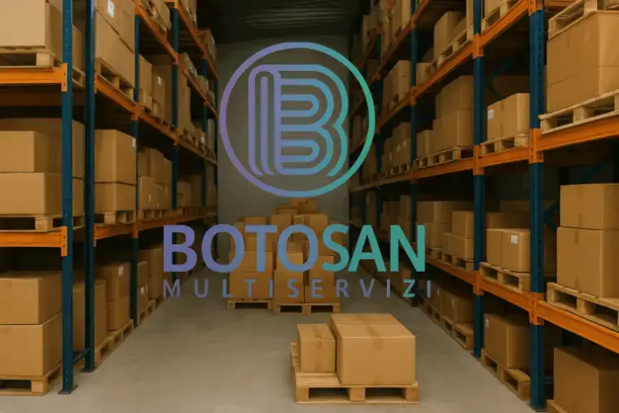
Deposito mobili custoditoAmbienti protetti e controllati, per pochi giorni o per diversi mesi.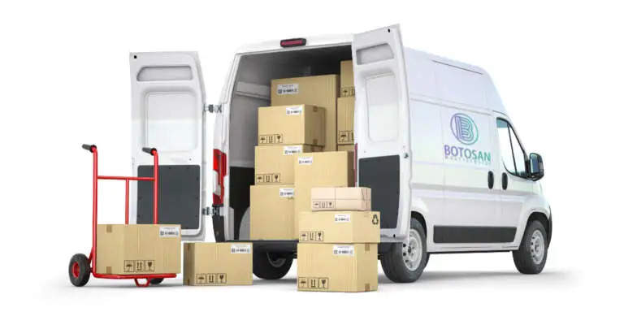
Deposito merci per aziendeStoccaggio di materiali e arredi per attività e cantieri.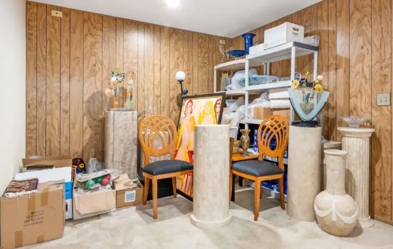
Sgomberi e smaltimentoAppartamenti, cantine, box e uffici, con smaltimento in discarica autorizzata.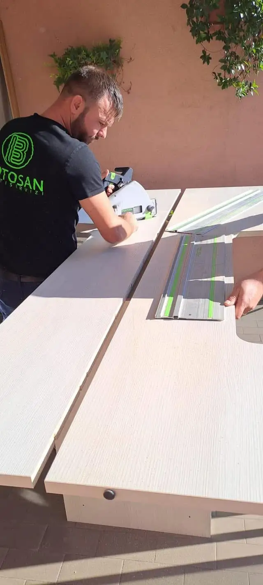
Riadattamento e falegnameriaAdattiamo mobili e arredi alla casa nuova: tagli, modifiche e riparazioni.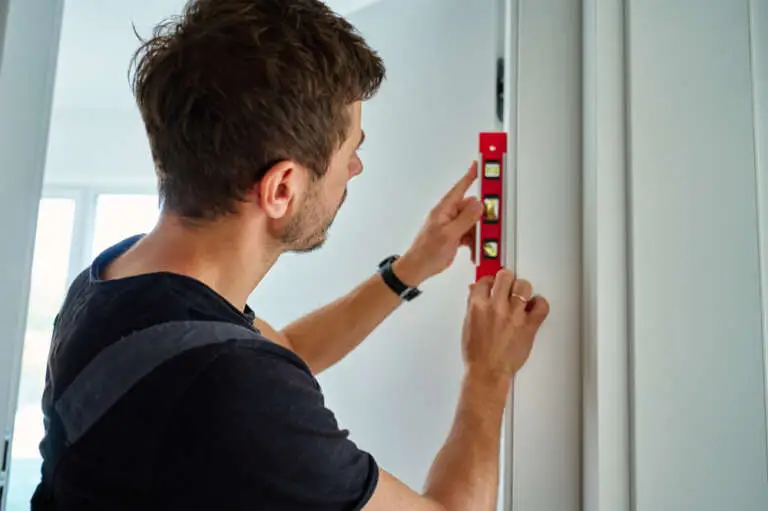
Montaggio porte internePosa di porte e stipiti, con regolazione e finitura.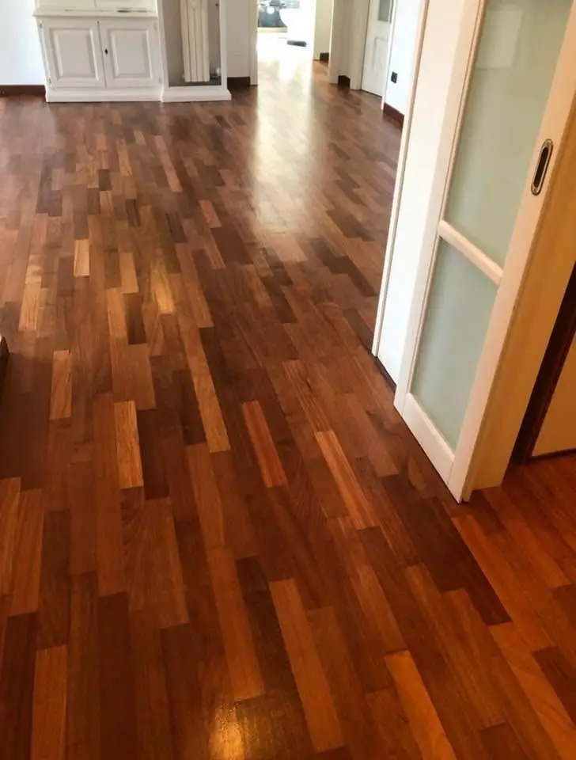
Posa e lamatura parquetPosa, battiscopa, lamatura e trattamento dei pavimenti in legno.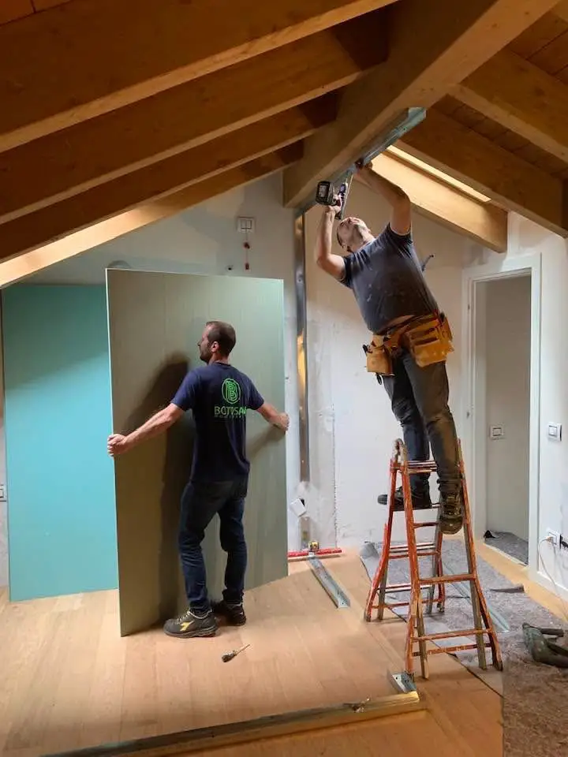
Opere in cartongessoPareti, controsoffitti, nicchie e velette con predisposizione per le luci.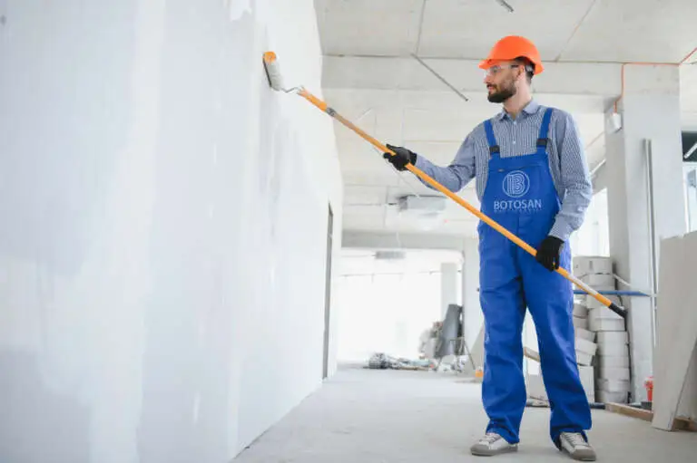
Tinteggiatura e imbiancaturaPareti e soffitti, prima dell’ingresso o dopo il trasloco.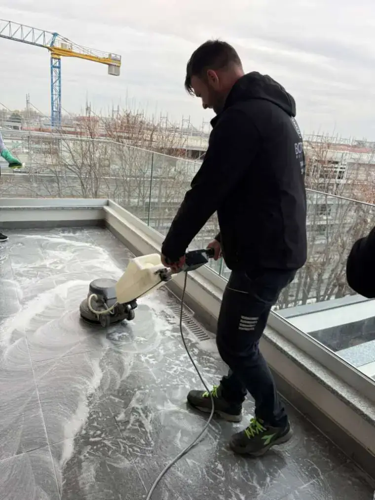
Pulizie post-cantiereLa casa pronta da abitare dopo i lavori.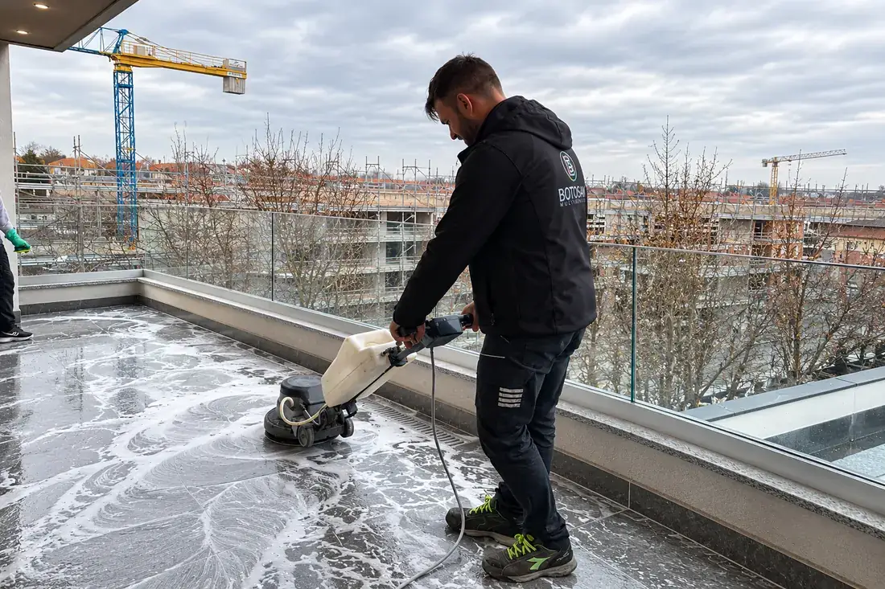
Pulizie prima dell’ingressoAmbienti puliti il giorno in cui entri, anche in giornata di trasloco.Schede di approfondimento
Ogni servizio e ogni lavoro svolto ha la sua pagina, con i dettagli operativi.
Compatta, leggera e maneggevole: la scala che entra dove gli altri mezzi non passano.
Per raggiungere i piani elevati e movimentare materiali dall’esterno degli edifici.
Il nostro mezzo più alto, per i palazzi dove nessun’altra soluzione arriva.
Supporto completo: pianificazione, trasporto e sistemazione finale degli ambienti.
Spazi sicuri, puliti e organizzati per privati, professionisti e aziende.
Trasporti conto terzi per privati e aziende, locali e nazionali.
Tutto quello che non porti nella casa nuova, smaltito a norma di legge.
Dopo i lavori, ambienti subito pronti all’uso.
Adattiamo gli arredi che hai già agli spazi della casa nuova.
Pareti, controsoffitti, cabine armadio e librerie, con impianti e luci integrati.
Pitture lavabili, traspiranti ed ecologiche, con protezione totale degli ambienti.
Installazione precisa di porte battenti, scorrevoli e filo muro.
Posa, levigatura, lamatura e finiture protettive per pavimenti in legno.
Trasferimento in una casa ancora in fase di lavori, seguito passo dopo passo.
Un trasferimento fuori regione, dalla valutazione iniziale alla consegna.
Un trasloco a lunga percorrenza, dal prelievo degli arredi alla consegna in Liguria.
Cambio di sede aziendale pianificato per fasi, senza fermare il lavoro.
Scale strette, ascensori piccoli e accessi difficili: come li affrontiamo.
La precisione è ciò che distingue il professionista dal dilettante.
La professionalità sta nel sapere come farlo, quando farlo, e nel farlo.
Da sempre ciò che ci distingue è la nostra puntualità sul lavoro.
Sopralluogo e preventivo gratuiti, senza impegno. Ti rispondiamo in giornata.
Affidati a noi per un trasloco senza stress: smontaggio, imballaggio, trasporto e rimontaggio. Ogni fase seguita da personale nostro, con preventivo chiaro e sopralluogo gratuito.
Scopri di piùSpostiamo uffici e attività nel fine settimana o fuori orario, per non fermare il lavoro: arredi, archivi e postazioni numerati e rimontati nella nuova sede.
Scopri di piùScale fino a 45 metri per caricare da balconi e finestre dove le scale interne non bastano: sicure, veloci e senza danni a mobili o pareti.
Scopri di più